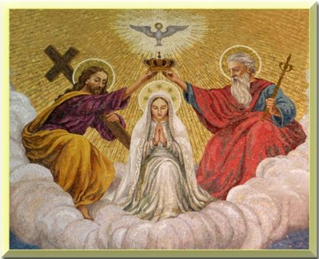

HODIE /  Solennità della Santissima Trinità. Il Vangelo dev’essere annunciato a ogni uomo, perché Gesù è la verità dell’uomo, ha ricevuto dal Padre ogni potere in cielo e in terra, perché ha fatto la volontà del Padre fino alla morte aprendo così per ogni uomo la via verso la pienezza della vita. Di qui le caratteristiche della missione: la forza che l’anima è lo Spirito Santo che da Gesù risorto viene promesso e trasmesso ai discepoli, come principio della vita nuova, che deve essere annunciata e comunicata a ogni uomo; il contenuto della missione è la sequela di Cristo, l’obbedienza al Vangelo, l’osservanza dei comandi di Gesù, l’adesione battesimale alla vita del Padre, del Figlio e dello Spirito Santo, il distacco dalla vita incredula, implorando e accogliendo la remissione dei peccati; la speranza che sostiene i missionari nelle fatiche e nelle difficoltà è la certezza che Gesù è sempre con loro sino alla fine del mondo.
Solennità della Santissima Trinità. Il Vangelo dev’essere annunciato a ogni uomo, perché Gesù è la verità dell’uomo, ha ricevuto dal Padre ogni potere in cielo e in terra, perché ha fatto la volontà del Padre fino alla morte aprendo così per ogni uomo la via verso la pienezza della vita. Di qui le caratteristiche della missione: la forza che l’anima è lo Spirito Santo che da Gesù risorto viene promesso e trasmesso ai discepoli, come principio della vita nuova, che deve essere annunciata e comunicata a ogni uomo; il contenuto della missione è la sequela di Cristo, l’obbedienza al Vangelo, l’osservanza dei comandi di Gesù, l’adesione battesimale alla vita del Padre, del Figlio e dello Spirito Santo, il distacco dalla vita incredula, implorando e accogliendo la remissione dei peccati; la speranza che sostiene i missionari nelle fatiche e nelle difficoltà è la certezza che Gesù è sempre con loro sino alla fine del mondo.
ANTIFONA / Sia benedetto Dio Padre e l’unigenito Figlio di Dio e lo Spirito Santo; perché grande è il suo amore per noi.
CONFITEOR / Confesso a Dio onnipotente e a voi, fratelli e sorelle, che ho molto peccato in pensieri, parole, opere e omissioni, per mia colpa, mia colpa, mia grandissima colpa. E supplico la beata sempre vergine Maria, gli angeli, i santi e voi, fratelli e sorelle, di pregare per me il Signore Dio nostro. Dio onnipotente abbia misericordia di noi, perdoni i nostri peccati e ci conduca alla vita eterna. Signore Pietà, Cristo pietà.
GLORIA / Gloria a Dio nell'alto dei cieli e pace in terra agli uomini di buona volontà. Noi ti lodiamo, ti benediciamo, ti adoriamo, ti glorifichiamo, ti rendiamo grazie per la tua gloria immensa, Signore Dio, Re del cielo, Dio Padre onnipotente. Signore, figlio unigenito, Gesù Cristo, Signore Dio, Agnello di Dio, Figlio del Padre, tu che togli i peccati dal mondo abbi pietà di noi; tu che togli i peccati dal mondo, accogli la nostra supplica; tu che siedi alla destra del Padre, abbi pietà di noi. Perché tu solo il Santo, tu solo il Signore, tu solo l'Altissimo, Gesù Cristo, con lo Spirito Santo: nella gloria di Dio Padre. Amen.
COLLETTA / O Dio Padre, che hai mandato nel mondo il tuo Figlio, Parola di verità, e lo Spirito santificatore per rivelare agli uomini il mistero ineffabile della tua vita, fa' che nella confessione della vera fede riconosciamo la gloria della Trinità e adoriamo l' unico Dio in tre persone. Per il nostro Signore Gesù Cristo, tuo Figlio, che è Dio, e vive e regna con te, nell'unità dello Spirito Santo, per tutti i secoli dei secoli. ♦ [B] O Dio santo e misericordioso, che nelle acque del Battesimo ci hai resi tuoi figli, ascolta il grido dello Spirito che in noi ti chiama Padre, perché, nell’obbedienza alla parola del Salvatore, annunciamo la tua salvezza offerta a tutti i popoli. Per il nostro Signore Gesù Cristo, tuo Figlio, che è Dio, e vive e regna con te, nell’unità dello Spirito Santo, per tutti i secoli dei secoli.
LETTURA1 / Il Signore è Dio lassù nei cieli e quaggiù sulla terra; non ve n'è altro / Dal libro del Deuteronòmio (Dt 4,32-34.39-40) / Mosè parlò al popolo dicendo: «Interroga pure i tempi antichi, che furono prima di te: dal giorno in cui Dio creò l'uomo sulla terra e da un'estremità all'altra dei cieli, vi fu mai cosa grande come questa e si udì mai cosa simile a questa? Che cioè un popolo abbia udito la voce di Dio parlare dal fuoco, come l'hai udita tu, e che rimanesse vivo? O ha mai tentato un dio di andare a scegliersi una nazione in mezzo a un'altra con prove, segni, prodigi e battaglie, con mano potente e braccio teso e grandi terrori, come fece per voi il Signore, vostro Dio, in Egitto, sotto i tuoi occhi? Sappi dunque oggi e medita bene nel tuo cuore che il Signore è Dio lassù nei cieli e quaggiù sulla terra: non ve n'è altro. Osserva dunque le sue leggi e i suoi comandi che oggi ti do, perché sia felice tu e i tuoi figli dopo di te e perché tu resti a lungo nel paese che il Signore, tuo Dio, ti dà per sempre». / Parola di Dio.
PSALMUS / (Sal 32) Beato il popolo scelto dal Signore / Retta è la parola del Signore e fedele ogni sua opera. Egli ama la giustizia e il diritto; dell'amore del Signore è piena la terra. R. / Dalla parola del Signore furono fatti i cieli, dal soffio della sua bocca ogni loro schiera. Perché egli parlò e tutto fu creato, comandò e tutto fu compiuto. R. / Ecco, l'occhio del Signore è su chi lo teme, su chi spera nel suo amore, per liberarlo dalla morte e nutrirlo in tempo di fame. R. / L'anima nostra attende il Signore: egli è nostro aiuto e nostro scudo. Su di noi sia il tuo amore, Signore, come da te noi speriamo. R.
LETTURA2 / Avete ricevuto lo Spirito che rende figli adottivi, per mezzo del quale gridiamo: «Abbà! Padre!» / Dalla lettera di san Paolo apostolo ai Romani (Rm 8,14-17) / Fratelli, tutti quelli che sono guidati dallo Spirito di Dio, questi sono figli di Dio. E voi non avete ricevuto uno spirito da schiavi per ricadere nella paura, ma avete ricevuto lo Spirito che rende figli adottivi, per mezzo del quale gridiamo: «Abbà! Padre!». Lo Spirito stesso, insieme al nostro spirito, attesta che siamo figli di Dio. E se siamo figli, siamo anche eredi: eredi di Dio, coeredi di Cristo, se davvero prendiamo parte alle sue sofferenze per partecipare anche alla sua gloria. / Parola di Dio.
ACCLAMATIO / Alleluia, alleluia / Gloria al Padre, al Figlio, allo Spirito Santo, a Dio, che è, che era e che viene. (Ap 1,8) / Alleluia.
VANGELO / Battezzate tutti i popoli nel nome del Padre e del Figlio e dello Spirito Santo / Dal Vangelo secondo Matteo (Mt 28,16-20) / In quel tempo, gli undici discepoli andarono in Galilea, sul monte che Gesù aveva loro indicato. Quando lo videro, si prostrarono. Essi però dubitarono. Gesù si avvicinò e disse loro: «A me è stato dato ogni potere in cielo e sulla terra. Andate dunque e fate discepoli tutti i popoli, battezzandoli nel nome del Padre e del Figlio e dello Spirito Santo, insegnando loro a osservare tutto ciò che vi ho comandato. Ed ecco, io sono con voi tutti i giorni, fino alla fine del mondo». / Parola del Signore.
CREDO / Credo in un solo Dio, Padre onnipotente, creatore del cielo e della terra, di tutte le cose visibili e invisibili. Credo in un solo Signore, Gesù Cristo, unigenito Figlio di Dio, nato dal Padre prima di tutti i secoli: Dio da Dio, Luce da Luce, Dio vero da Dio vero, generato, non creato, della stessa sostanza del Padre; per mezzo di lui tutte le cose sono state create. Per noi uomini e per la nostra salvezza discese dal cielo, e per opera dello Spirito Santo si è incarnato nel seno della Vergine Maria e si è fatto uomo. Fu crocifisso per noi sotto Ponzio Pilato, morì e fu sepolto. Il terzo giorno è risuscitato, secondo le Scritture, è salito al cielo, siede alla destra del Padre. E di nuovo verrà, nella gloria, per giudicare i vivi e i morti, e il suo regno non avrà fine. Credo nello Spirito Santo, che è Signore e dà la vita, e procede dal Padre e dal Figlio. Con il Padre e il Figlio è adorato e glorificato, e ha parlato per mezzo dei profeti. Credo la Chiesa, una santa cattolica e apostolica. Professo un solo battesimo per il perdono dei peccati. Aspetto la risurrezione dei morti e la vita del mondo che verrà. Amen.
OREMUS / Abbiamo ricevuto lo Spirito da figli, per mezzo del quale possiamo rivolgere al Padre le nostre invocazioni, in Cristo Gesù. Lo invochiamo dicendo: Ascoltaci, o Signore. / Rendici sempre consapevoli della tua presenza nella nostra vita, in modo da essere segno nel mondo della tua presenza, preghiamo. / Fa' che siamo attenti alla tua Parola, per riconoscerti presente nella vita della Chiesa e nelle situazioni quotidiane, preghiamo. / Fa' che sappiamo essere sempre degni del dono della libertà che il Signore Gesù ci ha conquistato per mezzo della sua croce, attraverso la fedeltà ai tuoi comandamenti, preghiamo. / Tu che hai donato speranza e vita a tutti coloro che ti hanno incontrato, rendici capaci di interessarci concretamente ai popoli e alle persone che non hanno il necessario per vivere, preghiamo. / Fa' che la Chiesa sappia parlare a tutti, in particolare ai giovani, perché possano incontrare in te la fonte della vera gioia, preghiamo. / Tu che ai discepoli affidi la missione dell'annuncio del Regno, fa' che tutti i cristiani vivano con gioia e generosità la propria vocazione a servizio del mondo intero, preghiamo. / O Dio nostro Padre, perfetta Comunione, nella tua misericordia accogli le nostre preghiere e donaci ciò che è veramente necessario per la nostra vita: il primo dono necessario è proprio la tua presenza, lo Spirito Santo in noi. Per Cristo nostro Signore.
OFFERTORIO / Santifica, Signore nostro Dio, i doni del nostro servizio sacerdotale sui quali invochiamo il tuo nome, e per questo sacrificio fa' di noi un' offerta perenne a te gradita. Per Cristo nostro Signore.
PREFAZIO / Il mistero della Santissima Trinità / È veramente cosa buona e giusta, nostro dovere e fonte di salvezza, rendere grazie sempre e in ogni luogo a te, Signore, Padre santo, Dio onnipotente ed eterno. Con il tuo Figlio unigenito e con lo Spirito Santo sei un solo Dio, un solo Signore, non nell’unità di una sola persona, ma nella Trinità di una sola sostanza. Quanto hai rivelato della tua gloria, noi lo crediamo, e con la stessa fede, senza differenze, lo affermiamo del tuo Figlio e dello Spirito Santo. E nel proclamare te Dio vero ed eterno, noi adoriamo la Trinità delle persone, l’unità della natura, l’uguaglianza nella maestà divina. Gli Angeli e gli Arcangeli, i Cherubini e i Serafini non cessano di esaltarti uniti nella stessa lode: Santo, Santo, Santo il Signore Dio dell’universo. I cieli e la terra sono pieni della tua gloria. Osanna nell’alto dei cieli. Benedetto colui che viene nel nome del Signore. Osanna nell’alto dei cieli.

COMMUNIO / Voi siete figli di Dio: egli ha mandato nei nostri cuori lo Spirito del suo Figlio, il quale grida: «Abbà! Padre!». (Gal 4,6) ♦ Andate e fate discepoli tutti i popoli, battezzandoli nel nome del Padre e del Figlio e dello Spirito Santo. (Mt 28,19)
GRATIAS / Signore Dio nostro, la comunione al tuo sacramento e la professione della nostra fede in te, unico Dio in tre persone, siano per noi pegno di salvezza dell’anima e del corpo. Per Cristo nostro Signore.
LECTIO
Patres
EVANGELIZO1 / Pio XII, papa dal 1939 al 1958 Allocuzione ai parroci di Roma e ai predicatori di quaresima, 17 febbraio 1942 / Io sono con voi tutti i giorni fino alla fine del mondo / Cristo, nostro avvocato (1Gv 2,1), siede alla destra del Padre. Non è più visibile fra noi nella sua natura umana. Ma si degna di restare con noi fino alla consumazione dei secoli, invisibile sotto le apparenze del pane e del vino nel sacramento del suo amore. E' il grande mistero di un Dio presente e nascosto, di questo Dio che verrà un giorno a giudicare i vivi e i morti. E' verso questo grande giorno che avanza l'umanità tutta intera dei secoli passati, del presente e dell'avvenire. E' verso questo giorno che avanza la Chiesa, maestra di fede e di morale per tutte le nazioni, battezzando nel nome del Padre, del Figlio e dello Spirito Santo. E noi, come crediamo nel Padre, creatore del cielo e della terra, al Figlio, redentore del genere umano, così crediamo allo Spirito Santo. E' lo Spirito che procede dal Padre e dal Figlio, come loro amore consustanziale, promesso e inviato da Cristo agli Apostoli il giorno di Pentecoste, virtù dall'alto che li riempie. E' il Paraclito e il Consolatore che dimora in loro per sempre, Spirito invisibile, sconosciuto al mondo, che insegna loro e ricorda loro tutto quello che Gesù ha detto loro. Mostrate al popolo cristiano la potenza divina infinita di questo Spirito creatore, dono dell'Altissimo, distributore di ogni carisma spirituale, consolatore ottimo, luce dei cuori, che nelle anime lava tutto ciò che è sordido, bagna ciò che è arido, sana ciò che è ferito. Da lui, amore eterno, discende il fuoco di quella carità che Cristo vuole vedere accesa quaggiù; carità che rende la Chiesa una, santa, cattolica, che l'anima e la rende invincibile in mezzo agli assalti della sinagoga di Satana; carità che unisce nella comunione dei santi; carità che rinnova l'amicizia con Dio e rimette i peccati.
EVANGELIZO-21 / Sant'Ireneo di Lione (ca130-ca 208) vescovo, teologo e martire / Dimostrazione della predicazione apostolica, 6-8 / «Battezzatele nel nome del Padre e del Figlio e dello Spirito Santo» / Questa è la regola della nostra fede, questo dà fondamenta al nostro edificio, questo dà fermezza al nostro agire. Dapprima: Dio Padre, increato, illimitato, invisibile; Dio uno, creatore dell'universo; questo è il primo articolo della nostra fede. Secondo articolo: il Verbo di Dio, Figlio di Dio, Gesù Cristo, nostro Signore; egli è stato rivelato ai profeti secondo il genere delle loro profezie e secondo il disegno del Padre; per mezzo di lui, tutto è stato fatto; alla fine dei tempi, per ricapitolare tutte le cose, si è degnato di farsi uomo tra gli uomini, visibile, palpabile, per distruggere così la morte, fare apparire la vita e operare la riconciliazione tra Dio e gli uomini. E terzo articolo: lo Spirito Santo; per mezzo di lui, i profeti hanno profetizzato, i nostri padri hanno imparato le cose di Dio e i giusti sono stati guidati sulla via della giustizia; alla fine dei tempi, è stato effuso in modo nuovo sugli uomini, per rinnovarli su tutta la terra, per Dio. Per questo il battesimo della nostra nuova nascita è posto sotto il segno di questi tre articoli. Dio Padre ce lo dona in vista della nostra nuova nascita nel Figlio suo per mezzo dello Spirito Santo. Coloro infatti che portano in loro lo Spirito Santo sono condotti al Verbo che è il Figlio, e il Figlio li conduce al Padre, e il Padre ci dà l'immortalità. Senza lo Spirito è impossibile vedere il Verbo di Dio, e senza il Figlio non ci si può avvicinare al Padre. La conoscenza del Padre infatti, è il Figlio, e la conoscenza del Figlio si fa per mezzo dello Spirito Santo, e il Figlio elargisce lo Spirito secondo la volontà del Padre.
Verbis
Silvestrini-21 / noi prenderemo dimora preso di lui... Vestigia della Santissima Trinità: Nell'uomo: intelletto, memoria, volontà; l'uomo normalmente è: Figlio, sposo, padre oppure figlia, sposa, madre, bambino, giovane, anziano. Il tempo è: presente - passato - futuro. Il triangolo: Tre angoli, una sola figura geometrica; Il trifoglio di San Patrizio: un pianta con tre foglioline... Il mistero della Santissima Trinità ci porta a scrutare la vita segreta di Dio, dove scorgiamo non una unità assoluta, quasi fredda e incomunicabile, ma Tre Persone unite dall'ineffabile vincolo dell'amore, generatrici di vita e di gaudio... Non possiamo pretendere certamente di entrare nei segreti di Dio, però è anche vero che nella professione della fede ci attendiamo il rispetto della razionalità. La Rivelazione ci insegna che Dio è "Uno" nella sostanza, ma "Tre" nelle persone: Padre e Figlio e Spirito Santo. Abbiamo bisogno di fermarci a meditare. Chiudere gli occhi per estraniarci da tutto ciò che ci distrae per fissare la mente del nostro spirito in questo consolatissimo e profondissimo mistero. E' nel nome della Santissima Trinità che siamo battezzati, assolti dai nostri peccati, guidati alla conoscenza di Dio dal Signore nostro Gesù che parla del Padre, di se stesso, Figlio, e dello Spirito Santo che egli invia non appena avrà consumato il suo sacrificio a lode del Padre e a salvezza dell'umanità. E' il mistero principale della Fede: "Unità e trinità di Dio"; ad esso si aggiunge il secondo: "Incarnazione, passione, morte e risurrezione di Nostro Signore Gesù Cristo". Ricordiamo questo mistero tante volte durante il giorno con il segno della Croce. Tornerebbe tutto a nostro vantaggio se imparassimo a farlo bene, pronunciando le parole mentre ci segniamo con gesti dignitosi. Non è raro purtroppo vedere anche uomini devoti segnarsi con superficialità, indizio di abitudine più che di riflessione. Eppure il segno di croce fatto bene, adagio, costituisce un atto di fede e una testimonianza per quanti sono in dubbio. Il giorno festivo in onore della Santissima Trinità ci induca a rendere occasioni di apostolato anche coi piccoli segni esterni. L'inabitazione del Padre e del Figlio e dello Spirito Santo nell'anima infonde una dolcezza ineffabile. "Se uno mi ama, osserverà la mia parola e il Padre mio lo amerà e noi prenderemo dimora presso di lui" (Gv.14,23). Siamo tempio di Dio, suoi familiari: Quale degnazione! Quale gioia! Amore, adorazione, lode, benedizione... a Te, Santissima Trinità, nei secoli dei secoli, Amen.
LOYOLA-21 / Ci sarà capitato di accompagnare qualcuno che amiamo in stazione e di salutarlo prima di un lungo viaggio. Negli ultimi momenti prima della partenza, si cerca di lasciare loro una parte di noi, racchiusa in un abbraccio o in una parola. Cerchiamo di lasciare loro l’essenziale, attraverso una raccomandazione, un incoraggiamento, o un semplice “ti voglio bene”. Con le parole di oggi si conclude il Vangelo di Matteo. Il Signore incontra, per l’ultima volta, i discepoli e lascia loro la sua eredità. In questo incontro Gesù rivela ai discepoli il senso di ciò che hanno vissuto, affida loro un compito, assicura la Sua presenza, una presenza diversa ma fedele, fino alla fine. Fino a quando il fine non si sia compiuto. Fino a quando la sua Parola e i suoi insegnamenti non avranno raggiunto tutti i confini della terra. In questo abbraccio il Signore rivela il suo potere. Un potere che non schiaccia, ma si inchina. La sua eredità è il servizio. Il suo insegnamento, una testimonianza incarnata nella quotidianità. La sua assenza, una presenza fedele. Affida tutto questo ai suoi discepoli, nonostante le loro imperfezioni e i loro dubbi. Perché lo Spirito agisca in loro, fino a raggiungere i nostri giorni, fino a raggiungere noi. Chi ha avuto la grazia di fare un incontro personale e intimo con il Signore, ha ricevuto la medesima eredità affidata ai discepoli. Non siamo chiamati a fare proseliti, ma a costruire relazioni. Nella nostra quotidianità, con tutti i popoli della terra, con lo Spirito che ci è stato donato e con la consapevolezza che Lui è con noi. / Quale spirito anima la tua vita di fede? Quale eredità credi che il Signore ti abbia lasciato? Quale eredità vorresti lasciare agli altri? (Maria Pia S.)
Roberto Pasolini / Nel nome / Se durante l’anno liturgico siamo soliti ricordare un evento particolare della storia di salvezza, oggi celebriamo invece un dogma, il mistero della santissima Trinità. Non si tratta di un astruso concetto teologico o di un’ingenua forzatura matematica, ma semplicemente del nome, prima scoperto e poi assegnato, di quel Dio che si è rivelato apertamente al mondo come comunione d’amore. Prima di ascendere al cielo per fare dono ai suoi discepoli dello Spirito Santo, Gesù decide di congedarsi lasciando loro una sorta di testamento: «A me è stato dato ogni potere in cielo e sulla terra» (Mt 28,18). Il volto Pantrokrator(«onnipotente») è una delle più tradizionali rappresentazioni di Cristo, che troviamo nell’abside delle chiese cristiane più antiche, in grado di ricordare alla comunità dei credenti che la vita battesimale è un santo pellegrinaggio che conduce nel seno del Padre tutti coloro che hanno accolto la possibilità di diventare figli nel Figlio. Tuttavia, mentre spontaneamente attribuiamo a questo aggettivo una valenza di forza e di dominio, il mandato missionario di Gesù alla fine del Vangelo ci costringe a intenderlo in ben altro modo: «Andate dunque e fate discepoli tutti i popoli» (28,19). Come diciamo ogni domenica nel Credo, l’onnipotenza di Dio non è un attributo della sua forza, ma una manifestazione della sua paternità d’amore verso tutte le cose: «Io credo in Dio Padre onnipotente…». Nel tempo della prima e antica alleanza, Dio aveva già iniziato a rivelare questa sua natura relazionale, mostrandosi misericordioso e accondiscendente verso Israele. Il libro del Deuteronomio conserva tutto lo stupore di un popolo che ha ricevuto l’inattesa rivelazione di un volto così premuroso e paterno da sapersi coinvolgere profondamente con la storia umana: «Interroga pure i tempi antichi, che furono prima di te: dal giorno in cui Dio creò l’uomo sulla terra e da un’estremità all’altra dei cieli, vi fu mai cosa grande come questa e si udì mai cosa simile a questa? Che cioè un popolo abbia udito la voce di Dio parlare dal fuoco, come l’hai udita tu, e che rimanesse vivo?» (Dt 4,32-33). Del resto, con il compito che affida ai suoi discepoli Gesù intende offrire anche ad altri la possibilità di iniziare a vivere di fronte a un Padre paziente e fedele, di fronte al quale si può assumere la liberante postura dei discepoli, cioè di uomini e donne che non si stancano di imparare l’arte di una vita piena e felice. La conversione a cui il Vangelo chiama ogni essere umano non consiste tanto nel passare dalla condizione di peccatori a quella di santi, ma nel dismettere i panni di chi presume di poter stare in piedi sulle proprie gambe e iniziare ad accogliere serenamente di poter «dipendere» da Dio e dagli altri, senza mai abdicare al compito della propria libertà, lasciandoci guidare dallo «Spirito di Dio» (Rm 8,14) per diventare, finalmente, noi stessi. Il Signore Gesù termina le sue istruzioni finali ai discepoli dicendo loro di assumere la responsabilità di battezzare tutti «nel nome del Padre e del Figlio e dello Spirito Santo» (Mt 28,19). Si svela così la consistenza ultima della santissima Trinità: non un difficile concetto da capire, ma un’esperienza semplice e liberante nella quale è possibile immergersi. Entrare nel mistero della vita di Dio significa scoprire che egli è Padre e che, nel Figlio, anche noi possiamo diventare figli amati e liberi, lasciando che lo Spirito gridi in noi più forte di ogni paura che resta: «Abbà! Padre!» (Rm 8,15). La Trinità non è un concetto teologico, ma un mare di misericordia in cui tanti fratelli e sorelle prima di noi si sono liberamente tuffati, imparando a rallegrarsi nel Signore e nella sua vita che cresce continuamente in noi attraverso la fede viva e operante nella carità. Celebrare questo mistero nella liturgia può ravvivare il desiderio di poterlo approfondire sempre di più nella vita di ogni giorno, felici di poterci avvicinare a tutti con una grande speranza da vivere e da condividere: «Ed ecco, io sono con voi tutti i giorni, fino alla fine del mondo» (Mt 28,20).
MichaelDavide Semeraro / Solidale / Quando ogni domenica e nelle grandi feste recitiamo il Credo durante l’Eucaristia, talora ci sembra di lanciarci in una serie di cavilli filosofici i cui contenuti sentiamo talora così lontani dalla nostra vita e, soprattutto, dal nostro linguaggio e dalla nostra sensibilità. Eppure, è sempre un’esperienza importante il fatto di evocare la fatica mista a tante sofferenze – ricevute ma anche inflitte – con cui i nostri padri e madri nella fede sono riusciti a esprimere ciò che credevano. Lo hanno fatto secondo i mezzi espressivi che avevano a disposizione e che hanno usato fino all’estremo della loro espressività, per poter proclamare la fede in un Dio che non è quello che talora ci vorremmo fabbricare a nostro uso e consumo, ma che «creò l’uomo sulla terra» (Dt 4,32) e ci ha resi «figli» (Rm 8,14). In questo modo l’Altissimo ci ha aperto il suo cuore offrendoci l’accesso a una relazione intima e amorosa con Lui. Tutta la vita forse non ci basterà per far morire dentro di noi quell’immagine di Dio che rischiamo di costruirci per evitare di incontrarlo veramente e di farci veramente incontrare, in un modo talmente forte e vero da ritessere ogni giorno l’alleanza che ricrea le condizioni di una vita degna di questo nome, per noi stessi e per tutti. Allora l’esortazione del Deuteronomio sprigiona tutta la sua forza: «Interroga pure i tempi antichi» (Dt 4,32) e ancora «medita bene nel tuo cuore» (4,39). La celebrazione del mistero della Trinità non è un rompicapo per addetti ai lavori, ma è il compito quotidiano di non farci un dio che sia a nostra immagine. Siamo chiamati a lasciarci continuamente riplasmare da un Dio in cui siamo chiamati a credere proprio per la coscienza sempre più profonda di quanto egli stesso creda in noi, dal momento in cui ci ha creati a ogni momento in cui accompagna il nostro cammino con una discrezione amorevolissima che non spia i nostri cammini, ma tutti li sostiene e li orienta. Contemplare la relazione che esiste tra le tre persone divine diventa una scuola di speranza e una scuola di amore efficace. Il Padre e il Figlio e lo Spirito Santo vivono una libertà personale che fa tutt’uno con l’unità sostanziale e questo è lo specchio e l’archetipo della nostra libertà personale – da conquistare giorno dopo giorno – che non è in contrasto con quell’unità sostanziale che ci unisce ai nostri fratelli e sorelle in umanità, come pure a tutte le creature che brulicano, gioiscono e soffrono sulla terra. Nel loro linguaggio, i nostri padri hanno compreso ed espresso un’immagine di Dio che è relazione e hanno usato le loro categorie filosofiche, in cui si rispecchiavano le loro priorità esistenziali. Forse oggi noi ci accontenteremmo di dire che il nostro è un Dio Solidale e non un dio solitario. Ce lo ricorda e ce lo promette il Signore Risorto prima di separarsi visibilmente dai suoi discepoli: «Ed ecco io sono con voi tutti i giorni, fino alla fine del mondo» (Mt 28,20). Il mistero della comunione trinitaria è quel Noi da cui scaturisce la nostra possibilità non solo di dire “Io” e di dire “Tu”, ma anche di riconoscere “Altro”. Proprio come una madre che parla al neonato con un amorevole “noi” fino a far schiudere la consapevolezza dell’”io”: unico, ma non isolato. Nel mistero della Trinità siamo stati battezzati, nel dinamismo della vita trinitaria siamo chiamati a immergere continuamente la nostra vita, per poter riemergere sempre più all’altezza della nostra parentela divina, il cui segno di autenticazione è una capacità crescente di solidarietà con tutti… con tutto!
DiBruno
DiBruno1 / NEL NOME DEL PADRE (Dt 4,32-34.39-40; Sal 32; Rm 8,14-17; Mt 28,16-20) / Il Vangelo offerto alla nostra meditazione, posto da San Matteo a chiusura di tutta la vita di Gesù sulla terra nel suo corpo, prima visibile e poi risorto, richiede di essere preso in esame parola per parola. Niente di esso deve sfuggire alla nostra attenta, sapiente, intelligente riflessione, nella preghiera elevata allo Spirito Santo, per chiedere a Lui ogni luce di verità. Lo esige la gravità o pesantezza di ogni sua Parola. “A me è stato dato ogni potere in cielo e sulla terra”: Ogni potere sulla terra e nei cieli è del Padre. Anche Gesù è dal Padre per generazione eterna. Lui è il suo Figlio Unigenito. Il Padre dona al Figlio ogni suo potere. Anzi pone tutto se stesso nelle mani del Figlio, perché il Figlio lo doni ad ogni uomo, come sua sola sorgente di vita eterna. È sul fondamento di questo potere che gli apostoli vengono mandati nel mondo. Il Padre manda Cristo con ogni potere di salvezza e di redenzione. Cristo manda i suoi apostoli con ogni potere di salvezza e di redenzione. Gli apostoli sono da Cristo come Cristo è dal Padre. Gli apostoli devono obbedire a Cristo come Cristo obbedisce al Padre. È nell’obbedienza degli apostoli a Cristo che si compie la salvezza del mondo. “Andate dunque e fate discepoli tutti i popoli”: Cristo è venuto ed ha fatto gli apostoli suoi discepoli. Gli apostoli devono andare per il mondo e fare loro discepoli tutti i popoli. In questo comando salta tutta la falsa problematica del cristiano che vuole essere nel mondo solo un annunciatore di verità non negoziabili, principi primi indistruttibili, altre teorie morali anche di altissimo valore. Salta anche il cristiano operatore sociale, elemosiniere, curatore del corpo dell’uomo, difensore di giustizia umana. Tutte queste cose sono conseguenze della missione, ma non il fine di essa. Il fine della missione è ben chiaro: gli apostoli sono mandati nel mondo per fare discepoli tutti i popoli: discepoli degli apostoli, per essere di Cristo, per essere figli del Padre. Se i discepoli non vengono fatti, non c’è missione. Non c’è obbedienza. Non c’è salvezza. “Battezzandoli nel nome del Padre e del Figlio e dello Spirito Santo”: I discepoli si fanno predicando il Vangelo, invitando esplicitamente alla conversione e alla fede nella Parola di Gesù. Fatti i discepoli essi vanno battezzati nel nome del Padre e del Figlio e dello Spirito Santo. Il Padre dona loro la sua paternità. La dona però nel Figlio che dona la sua vera figliolanza. La dona attraverso la comunione dello Spirito Santo, sempre in Lui e per Lui. Senza questo battesimo si rimane fuori del mistero della Trinità. Non si diviene neanche continuatori della missione di redenzione di Gesù. Gli undici discepoli, intanto, andarono in Galilea, sul monte che Gesù aveva loro indicato. Quando lo videro, si prostrarono. Essi però dubitarono. Gesù si avvicinò e disse loro: «A me è stato dato ogni potere in cielo e sulla terra. Andate dunque e fate discepoli tutti i popoli, battezzandoli nel nome del Padre e del Figlio e dello Spirito Santo, insegnando loro a osservare tutto ciò che vi ho comandato. Ed ecco, io sono con voi tutti i giorni, fino alla fine del mondo». “Insegnando loro a osservare tutto ciò che vi ho comandato”: L’insegnamento serve perché si viva in Cristo da veri figli del Padre, nella piena obbedienza alla sua volontà. Gli apostoli vivono come veri figli di Dio e insegnando ad ogni battezzato come si vive da vero figlio del Padre, in Cristo, nella comunione dello Spirito Santo. “Ed ecco, io sono con voi tutti i giorni, fino alla fine del mondo”: Gesù è con i suoi apostoli così come Dio era con Mosè quando lo ha mandato a liberare il suo popolo dalla schiavitù dell’Egitto. Gesù è con loro per operare assieme a loro. È Lui che deve confermare ogni loro Parola, manifestando tutta la sua potenza di salvezza e di redenzione. Perché Gesù sia con loro, è necessario che essi siano nella sua Parola, obbediscono ad ogni suo comando. Gesù di certo non è con chi si vergogna di predicare il Vangelo, invitare alla conversione e alla fede, battezzando e insegnando come il Vangelo va vissuto. Lo attesta il loro modo di essere e di operare. Se gli apostoli non obbediscono a Cristo come Cristo ha obbedito al padre, non c’è salvezza. / Vergine Maria, Madre della Redenzione, Angeli, Santi, fateci obbedienti a Cristo Gesù.
DiBruno-21 / Nel nome del Padre e del Figlio e dello Spirito Santo (Mt 28,16-20) / Nel Vangelo secondo Giovanni il battesimo così viene annunciato: “Vi era tra i farisei un uomo di nome Nicodèmo, uno dei capi dei Giudei. Costui andò da Gesù, di notte, e gli disse: «Rabbì, sappiamo che sei venuto da Dio come maestro; nessuno infatti può compiere questi segni che tu compi, se Dio non è con lui». Gli rispose Gesù: «In verità, in verità io ti dico, se uno non nasce dall’alto, non può vedere il regno di Dio». Gli disse Nicodèmo: «Come può nascere un uomo quando è vecchio? Può forse entrare una seconda volta nel grembo di sua madre e rinascere?». Rispose Gesù: «In verità, in verità io ti dico, se uno non nasce da acqua e Spirito, non può entrare nel regno di Dio. Quello che è nato dalla carne è carne, e quello che è nato dallo Spirito è spirito. Non meravigliarti se ti ho detto: dovete nascere dall’alto. Il vento soffia dove vuole e ne senti la voce, ma non sai da dove viene né dove va: così è chiunque è nato dallo Spirito»” (Gv 1-8). Sono parole che nessun cristiano potrà mai contraddire. Obbligano sempre. Gli Apostoli sono mandati per fare discepoli, battezzare, insegnare come si vive il Vangelo. Sono una sola missione, un solo mandato, non quattro comandi separati e distinti, dei quali uno si prende e gli altri si lasciano. Il comando di Gesù è uno. Le obbedienze sono quattro: andare, fare discepoli, battezzare, insegnare a vivere il Vangelo. Se una sola di queste obbedienze viene meno, la missione viene meno. Il battesimo viene amministrato nel nome del Padre e del Figlio e dello Spirito Santo. Il Padre è l’Amore Eterno, la Carità, la Compassione, il Perdono, la Misericordia. Immerso nel Padre, l’uomo diviene anche lui amore, carità, compassione, perdono, misericordia. Ciò che diviene per natura poi dovrà essere per volontà. Sempre dovrà volere essere nel mondo ciò che è il Padre suo. La volontà conduce la natura solo per grazia. La grazia è Cristo Gesù. Gesù è Luce, verità, vita eterna, olocausto, sacrificio per i peccati, espiazione vicaria, obbedienza fino alla morte di croce. Quando si è immersi in Cristo ci si trasforma in Cristo per vivere di Cristo, con Cristo, per Cristo, sempre però in Lui. Acquisire la natura cristiforme non è sufficiente, non basta. Anche questa natura dovrà essere assunta dalla volontà perché venga condotta ad una conformazione a Cristo Gesù sempre più perfetta. La volontà conduce verso Cristo se è mossa e guidata dallo Spirito Santo. Dello Spirito del Signore è propria la comunione. Nel mistero della Beata Trinità lo Spirito è la comunione eterna di amore e di verità tra il Padre e il Figlio. Il Padre e il Figlio si conoscono e si amano nello Spirito Santo. Nello Spirito Santo si donano la vita. Il Padre dona tutta la sua vita al Figlio, il Figlio dona tutta la sua vita al Padre con una obbedienza eterna. La stessa comunione si compie nel corpo di Cristo. Nello Spirito Santo Cristo e il cristiano si conoscono, si amano, si donano la vita. Nello Spirito Santo ogni membro del corpo di Cristo dona la vita ad ogni altro membro. Nello Spirito Santo tutto il corpo si dona al Padre e vive per Lui. È questo il grande prodigio che opera il battesimo amministrato nel nome del Padre e del Figlio e dello Spirito Santo. Da figlio di Adamo e da erede della morte, il battezzato diviene figlio di Dio, nel Figlio suo Gesù Cristo ed erede della vita eterna. / In quel tempo, gli undici discepoli andarono in Galilea, sul monte che Gesù aveva loro indicato. Quando lo videro, si prostrarono. Essi però dubitarono. Gesù si avvicinò e disse loro: «A me è stato dato ogni potere in cielo e sulla terra. Andate dunque e fate discepoli tutti i popoli, battezzandoli nel nome del Padre e del Figlio e dello Spirito Santo, insegnando loro a osservare tutto ciò che vi ho comandato. Ed ecco, io sono con voi tutti i giorni, fino alla fine del mondo». / Cosi l’Apostolo Paolo parla del battesimo nella Lettera ai Galati: “Ma quando venne la pienezza del tempo, Dio mandò il suo Figlio, nato da donna, nato sotto la Legge, per riscattare quelli che erano sotto la Legge, perché ricevessimo l’adozione a figli. E che voi siete figli lo prova il fatto che Dio mandò nei nostri cuori lo Spirito del suo Figlio, il quale grida: «Abbà! Padre!». Quindi non sei più schiavo, ma figlio e, se figlio, sei anche erede per grazia di Dio” (Gal 4,4-7). Senza battesimo si è eredi della morte. / Madre della Redenzione, Angeli, Santi, fate che comprendiamo questo grande mistero.
HomilyVoice-21 / PRIMA LETTURA Sappi dunque oggi e medita bene nel tuo cuore che il Signore è Dio lassù nei cieli e quaggiù sulla terra: non ve n’è altro. Osserva dunque le sue leggi e i suoi comandi che oggi ti do, perché sia felice tu e i tuoi figli dopo di te e perché tu resti a lungo nel paese che il Signore, tuo Dio, ti dà per sempre». Chi è il Dio di Abramo, il Dio di Isacco, il Dio di Giacobbe? Non è il Dio che sta nei cieli. Neanche è il Dio che sta nei templi. È il Dio che cammina con l’uomo allo stesso modo che il pastore cammina con le pecore. L’uomo però non è una pecora. Può anche non ascoltare il Signore. Quando l’uomo non ascolta il suo Signore, il suo Signore nulla può fare per legarlo al suo amore, alla sua verità, alla sua santità, alla sua benedizione. Dio vuole amare l’uomo e chiede all’uomo che si lasci amare dal suo Dio. Come l’uomo si lascerà amare dal suo Dio? Obbedendo alla sua voce, ascoltando la sua Parola, mettendo in pratica le sue leggi e i suoi comandi. Nell’obbedienza, Dio è universale benedizione per l’uomo. Nella disobbedienza, l’uomo si prende la sua vita e la conduce dalla sua volontà. Ma questa conduzione non conduce alla vita, bensì alla morte. Dio però non abbandona l’uomo nella morte. Sempre va in cerca di Lui per offrirli nuovamente il suo aiuto, il suo perdono, la riconciliazione, la pace. Ma anche questi doni dovranno essere accolti dal Signore nel pentimento e nella conversione, che è ritorno pieno nell’obbedienza. Ecco alcuni Salmi come sviluppano questa verità e la insegnano ai figli d’Israele: Venite, cantiamo al Signore, acclamiamo la roccia della nostra salvezza. Accostiamoci a lui per rendergli grazie, a lui acclamiamo con canti di gioia. Perché grande Dio è il Signore, grande re sopra tutti gli dèi. Nella sua mano sono gli abissi della terra, sono sue le vette dei monti. Suo è il mare, è lui che l’ha fatto; le sue mani hanno plasmato la terra. Entrate: prostràti, adoriamo, in ginocchio davanti al Signore che ci ha fatti. È lui il nostro Dio e noi il popolo del suo pascolo, il gregge che egli conduce. Se ascoltaste oggi la sua voce! «Non indurite il cuore come a Merìba, come nel giorno di Massa nel deserto, dove mi tentarono i vostri padri: mi misero alla prova pur avendo visto le mie opere. Per quarant’anni mi disgustò quella generazione e dissi: “Sono un popolo dal cuore traviato, non conoscono le mie vie”. Perciò ho giurato nella mia ira: “Non entreranno nel luogo del mio riposo”» (Sal 95,1-11). Esultate in Dio, nostra forza, acclamate il Dio di Giacobbe! Intonate il canto e suonate il tamburello, la cetra melodiosa con l’arpa. Suonate il corno nel novilunio, nel plenilunio, nostro giorno di festa. Questo è un decreto per Israele, un giudizio del Dio di Giacobbe, una testimonianza data a Giuseppe, quando usciva dal paese d’Egitto. Un linguaggio mai inteso io sento: «Ho liberato dal peso la sua spalla, le sue mani hanno deposto la cesta. Hai gridato a me nell’angoscia e io ti ho liberato; nascosto nei tuoni ti ho dato risposta, ti ho messo alla prova alle acque di Merìba. Ascolta, popolo mio: contro di te voglio testimoniare. Israele, se tu mi ascoltassi! Non ci sia in mezzo a te un dio estraneo e non prostrarti a un dio straniero. Sono io il Signore, tuo Dio, che ti ha fatto salire dal paese d’Egitto: apri la tua bocca, la voglio riempire. Ma il mio popolo non ha ascoltato la mia voce, Israele non mi ha obbedito: l’ho abbandonato alla durezza del suo cuore. Seguano pure i loro progetti! Se il mio popolo mi ascoltasse! Se Israele camminasse per le mie vie! Subito piegherei i suoi nemici e contro i suoi avversari volgerei la mia mano; quelli che odiano il Signore gli sarebbero sottomessi e la loro sorte sarebbe segnata per sempre. Lo nutrirei con fiore di frumento, lo sazierei con miele dalla roccia» (Sal 81,1-17). Il Signore è il mio pastore: non manco di nulla. Su pascoli erbosi mi fa riposare, ad acque tranquille mi conduce. Rinfranca l’anima mia, mi guida per il giusto cammino a motivo del suo nome. Anche se vado per una valle oscura, non temo alcun male, perché tu sei con me. Il tuo bastone e il tuo vincastro mi danno sicurezza. Davanti a me tu prepari una mensa sotto gli occhi dei miei nemici. Ungi di olio il mio capo; il mio calice trabocca. Sì, bontà e fedeltà mi saranno compagne tutti i giorni della mia vita, abiterò ancora nella casa del Signore per lunghi giorni (Sal 23,1-6). Ecco cosa il Signore oggi ricorda per mezzo di Mosè ai figli d’Israele: “Io sono il Signore vostro Dio. Sono il Signore che vi ho liberato, salvato, riscattato, redento. Sono il Signore che vi ho costituito mio popolo. Sono il Signore che vi ho fatto fino ad oggi e sono il Signore che sempre vi farà suo popolo. Senza di me non sarete un popolo libero. Ritornerete nella schiavitù dalla quale vi ho liberato, anzi in una schiavitù ancora più grande. Io, il Signore, questo ho fatto per voi e continuerò a farlo. Posso farlo se voi permetterete che io sia sempre il vostro Dio e sempre il vostro Signore. Come il Signore potrà essere il nostro Signore e Dio potrà essere il nostro Dio? Obbedendo noi alla sua Parola. Con l’obbedienza lo confessiamo come nostro Dio e Signore e Lui opera per noi come vero Dio e Signore. Non obbedendo alla sua Parola, disobbedendo alle sue Leggi e ai suoi Comandamenti, noi lo rifiutiamo, lo rinneghiamo come Dio e Signore e Lui non può più agire come vero nostro Dio e Signore. Dio vuole essere il nostro Dio e Signore. Noi dobbiamo volere che Lui sia il nostro Dio e il nostro Signore. Lo vogliamo attraverso la nostra obbedienza ad ogni suo Statuto, Prescrizione, Legge, Comandamento. Nell’obbedienza alla sua Parola, il Signore sempre ci farà abitare nella terra che Lui oggi ci dona perché lo ha promesso al suo servo Abramo. LEGGIAMO Dt 4,32-34.39-40 Interroga pure i tempi antichi, che furono prima di te: dal giorno in cui Dio creò l’uomo sulla terra e da un’estremità all’altra dei cieli, vi fu mai cosa grande come questa e si udì mai cosa simile a questa? Che cioè un popolo abbia udito la voce di Dio parlare dal fuoco, come l’hai udita tu, e che rimanesse vivo? O ha mai tentato un dio di andare a scegliersi una nazione in mezzo a un’altra con prove, segni, prodigi e battaglie, con mano potente e braccio teso e grandi terrori, come fece per voi il Signore, vostro Dio, in Egitto, sotto i tuoi occhi? Sappi dunque oggi e medita bene nel tuo cuore che il Signore è Dio lassù nei cieli e quaggiù sulla terra: non ve n’è altro. Osserva dunque le sue leggi e i suoi comandi che oggi ti do, perché sia felice tu e i tuoi figli dopo di te e perché tu resti a lungo nel paese che il Signore, tuo Dio, ti dà per sempre». Il vostro Dio e il vostro Signore è stato fino ad oggi il vostro Dio e il vostro Signore perché lo ha promesso ad Abramo, suo amico. Dal momento in cui voi entrerete nella Terra Promessa inizia il tempo dell’obbedienza. Niente più sarà per promessa ad Abramo, tutto sarà invece per la vostra obbedienza alla sua Parola. Entrare nella terra è un dono. Dimorare nella terra è per obbedienza. Questa verità mai va dimenticata. Questa verità vale per ogni altro uomo. Per la fede in Cristo Gesù, si nasce da acqua e da Spirito Santo, si entra nel regno di Dio. Si diviene regno di Dio per grazia. Si rimane regno di Dio per grazia e per obbedienza. La grazia aiuta l’obbedienza, mai però la sostituirà. È questo oggi il grande errore nel quale abbiamo inabissato la purissima fede in Cristo Gesù. Noi diciamo che si diviene per grazia regno di Dio e sempre si rimane perché grande è la misericordia del Signore e a tutti concede di entrare nella luce eterna nei cieli beati. Questa falsità distrugge non solo duemila anni di Rivelazione, ma anche duemila anni di Tradizione, di Magistero, di Teologia, di Agiografia. Questo solo errore incendia ogni verità esistente e la riduce in cenere. Promessa, grazia, obbedienza sono tre cose che mai vanno separate. Si dimora per obbedienza. Si entra per grazia. Senza obbedienza dal regno di Dio si ritorna nel regno del mondo. SECONDA LETTURA Lo Spirito stesso, insieme al nostro spirito, attesta che siamo figli di Dio. E se siamo figli, siamo anche eredi: eredi di Dio, coeredi di Cristo, se davvero prendiamo parte alle sue sofferenze per partecipare anche alla sua gloria. Chi è lo Spirito Santo e qual è la missione che Lui dovrà compiere? La sua missione consiste nel generare, formare, santificare il corpo di Cristo conducendo ogni suo membro alla perfetta conformazione a Cristo Gesù, suo Capo, suo Pastore, suo Redentore, suo Salvatore, sua Vita, sua Verità, sua Luce, suo Signore, suo Giudice. Lo Spirito Santo dal Padre è stato versato su Cristo Gesù dopo il suo battesimo al fiume Giordano. Cristo Gesù si consegna allo Spirito del Signore momento per momento. Lo Spirito del Signore prende Cristo, il Consegnato a Lui, e lo conduce di obbedienza in obbedienza fino al totale annichilimento attraverso la morte di croce. Sulla croce Gesù diviene il nuovo Albero della vita. Da questo Albero trafitto sgorga il Fiume che dovrà dare la vita ad ogni uomo, che per la fede crede in Cristo Gesù. Il Fiume della vita non è sgorgato dal corpo di Cristo. Il Fiume della vita dovrà sgorgare sempre dal corpo di Cristo e il corpo di Cristo è la sua Chiesa. Come sgorga lo Spirito Santo attraverso il corpo di Cristo che è la Chiesa? Esso sgorga per via sacramentale e per via obbedienziale. La via obbedienziale è la via che fa nascere la fede in Cristo. Senza la nascita della fede in Cristo, opera dello Spirito Santo che sgorga dal cuore di ogni discepolo di Gesù, nella misura della sua conformazione e della sua obbedienza a Cristo Signore, lo Spirito non viene versato e la fede non nasce. Se la fede non nasce la formazione del corpo di Cristo avviene sì per via sacramentale. Ma essendo un inserimento in Cristo senza alcuna fede, questo inserimento è in tutto simile ad un albero piantato sulla dura roccia o in un deserto. Non potrà mai produrre frutti di vita eterna. La forza di vera generazione e di vera santificazione del corpo di Cristo risiede tutta nell’obbedienza di ogni suo membro. Lo Spirito Santo è dato come Spirito di vera conoscenza del mistero di Cristo e del mistero che in Cristo è di ogni suo membro. Anche questo Spirito di conoscenza dovrà sgorgare dal corpo di Cristo, sia per via sacramentale e sia per via obbedienziale. Né per via sacramentale senza la via obbedienziale, né per via obbedienziale senza la via sacramentale. Lo Spirito Santo è anche versato come Spirito di convincimento. Lo Spirito, dinanzi ad ogni tentazione, ogni pensiero del mondo, ogni falsità della storia, dovrà convincerci che solo nel mistero di Cristo si compie il nostro mistero e solo nella sua verità noi diveniamo veri. Se questo Spirito di convincimento non è versato nei nostri cuori e in essi non cresce, a poco a poco perdiamo il riferimento a Cristo e ci consegniamo al mondo, al suo pensiero, alle sue pompe, alle sue concupiscenze. LEGGIAMO Rm 8,14-17 Infatti tutti quelli che sono guidati dallo Spirito di Dio, questi sono figli di Dio. E voi non avete ricevuto uno spirito da schiavi per ricadere nella paura, ma avete ricevuto lo Spirito che rende figli adottivi, per mezzo del quale gridiamo: «Abbà! Padre!». Lo Spirito stesso, insieme al nostro spirito, attesta che siamo figli di Dio. E se siamo figli, siamo anche eredi: eredi di Dio, coeredi di Cristo, se davvero prendiamo parte alle sue sofferenze per partecipare anche alla sua gloria. Ecco la domanda che ogni membro del corpo di Cristo deve porre al suo cuore e alla sua intelligenza: Lo Spirito Santo attraverso la via della mia obbedienza perfetta ad ogni parola di Gesù viene da me effuso come vero Spirito di conversione e di fede in Cristo, vero Spirito di conoscenza del mistero di Cristo, vero Spirito di convincimento che solo nel mistero di Cristo e nella sua verità si compie il mio mistero e la mia verità? Se lo Spirito Santo non convince me che solo nel mistero di Cristo e nella sua verità è il compimento del mio mistero e della mia verità, potrà mai convincere un’altra sola persona sulla faccia della terra? Mai. Lo Spirito che si versa negli altri è nella misura della sua crescita in me. Se in me lo Spirito è morto, mai potrà uscire uno Spirito vivo. Se oggi molti figli della Chiesa si sono separati dal mistero di Cristo e dalla sua verità, dal mistero del Padre e dalla sua verità, dal mistero dello Spirito e dalla sua verità, dalla mistero della Chiesa e dalla sua verità, dal mistero della Rivelazione e dalla sua verità, è segno che lo Spirito è morto nei loro cuori. Senza uno Spirito forte, vivo, vero grande fiume che sgorga dal nostro cuore, perdiamo ogni conoscenza del mistero. È questa oggi la causa degli infiniti errori sia di teologia dogmatica come anche di teologia morale – e di conseguenza anche di teologia pastorale e missionaria – che stanno conducendo la Chiesa a perdere la sua dimensione cristica a favore di una dimensione puramente umana. O ravviviamo lo Spirito Santo o condanniamo il corpo di Cristo, la sua Chiesa, a svestirsi della sua verità per indossare le falsità di Satana. LETTURA DEL VANGELO A me è stato dato ogni potere in cielo e sulla terra. Andate dunque e fate discepoli tutti i popoli, battezzandoli nel nome del Padre e del Figlio e dello Spirito Santo, insegnando loro a osservare tutto ciò che vi ho comandato. Esaminiamo ogni Parola del comando dato da Gesù ai suoi Apostoli attraverso quanto messo in luce nell’ultima frase con la quale si concludeva il commento alla Prima Lettura: “Promessa, grazia, obbedienza sono tre cose che mai vanno separate. Si dimora per obbedienza. Si entra per grazia. Senza obbedienza, dal regno di Dio si ritorna nel regno del mondo”. Dio ha promesso di benedire tutte le nazioni nella Discendenza di Abramo. La Discendenza di Abramo è Cristo Gesù. Questa promessa si compie per la fede in Cristo. Si annuncia Cristo. Si crede in Cristo. Si nasce da acqua e da Spirito Santo. Si diviene corpo di Cristo. Se Cristo non viene annunciato, mai potrà nascere la fede in Cristo. Se non nasce la fede in Cristo, neanche si potrà nascere da acqua e da Spirito. Anche se si dovesse nascere senza fede, questa nascita non produce alcun frutto di vita eterna. Perché non produce alcun frutto di vita eterna? Perché si rimane membra vive nel corpo di Cristo per l’obbedienza ad ogni sua Parola. Gli Apostoli devono andare. Predicare Cristo. Fare discepoli tutti i popoli. Battezzare nel nome del Padre e del Figlio e dello Spirito Santo. Il primo comando di Cristo è andare. Il secondo comando è fare discepoli tutti i popoli. Il terzo comando è battezzare nel nome del Padre e del Figlio e dello Spirito Santo. Questo è il preludio della salvezza. Per l’obbedienza a questi tre primi comandi si forma il corpo di Cristo. Se a questi tre primi comandi non viene data piena e perfetta obbedienza, il corpo di Cristo non si forma. Finisce la missione apostolica. Le altre missioni sono tutte finalizzate a far crescere il corpo di Cristo in obbedienza ad ogni comando consegnato agli Apostoli dal Signore. È giusto dire oggi una parola di chiarezza e di luce. Gli Apostoli non sono mandati nel mondo per predicare una morale nuova. Loro sono mandati per fare il corpo di Cristo. Il corpo di Cristo si fa predicando Cristo e invitando ogni persona a lasciarsi fare corpo di Cristo. Fatto il corpo di Cristo, il corpo di Cristo va formato perché viva la stessa obbedienza di Cristo. Come Cristo è stato obbediente ad ogni Parola del Padre, così il corpo di Cristo dovrà essere obbediente ad ogni Parola di Cristo. Chi deve formare il corpo di Cristo sono gli Apostoli del Signore. In comunione e in obbedienza gerarchica con loro, ogni altro membro del corpo di Cristo deve formare il corpo di Cristo. Chi deve condurre il corpo di Cristo alla piena obbedienza alla Parola di Cristo sono ancora gli Apostoli del Signore. In comunione e in obbedienza gerarchica con gli Apostoli ogni altro membro del corpo di Cristo. Ecco come questa verità viene mirabilmente insegnata dall’Apostolo Paolo: “Un solo corpo e un solo spirito, come una sola è la speranza alla quale siete stati chiamati, quella della vostra vocazione; un solo Signore, una sola fede, un solo battesimo. Un solo Dio e Padre di tutti, che è al di sopra di tutti, opera per mezzo di tutti ed è presente in tutti. A ciascuno di noi, tuttavia, è stata data la grazia secondo la misura del dono di Cristo. Ed egli ha dato ad alcuni di essere apostoli, ad altri di essere profeti, ad altri ancora di essere evangelisti, ad altri di essere pastori e maestri, per preparare i fratelli a compiere il ministero, allo scopo di edificare il corpo di Cristo, finché arriviamo tutti all’unità della fede e della conoscenza del Figlio di Dio, fino all’uomo perfetto, fino a raggiungere la misura della pienezza di Cristo. Così non saremo più fanciulli in balìa delle onde, trasportati qua e là da qualsiasi vento di dottrina, ingannati dagli uomini con quella astuzia che trascina all’errore. Al contrario, agendo secondo verità nella carità, cerchiamo di crescere in ogni cosa tendendo a lui, che è il capo, Cristo. Da lui tutto il corpo, ben compaginato e connesso, con la collaborazione di ogni giuntura, secondo l’energia propria di ogni membro, cresce in modo da edificare se stesso nella carità (Ef 4,4-16). Come dunque avete accolto Cristo Gesù, il Signore, in lui camminate, radicati e costruiti su di lui, saldi nella fede come vi è stato insegnato, sovrabbondando nel rendimento di grazie. Fate attenzione che nessuno faccia di voi sua preda con la filosofia e con vuoti raggiri ispirati alla tradizione umana, secondo gli elementi del mondo e non secondo Cristo. È in lui che abita corporalmente tutta la pienezza della divinità, e voi partecipate della pienezza di lui, che è il capo di ogni Principato e di ogni Potenza. In lui voi siete stati anche circoncisi non mediante una circoncisione fatta da mano d’uomo con la spogliazione del corpo di carne, ma con la circoncisione di Cristo: con lui sepolti nel battesimo, con lui siete anche risorti mediante la fede nella potenza di Dio, che lo ha risuscitato dai morti. Con lui Dio ha dato vita anche a voi, che eravate morti a causa delle colpe e della non circoncisione della vostra carne, perdonandoci tutte le colpe e annullando il documento scritto contro di noi che, con le prescrizioni, ci era contrario: lo ha tolto di mezzo inchiodandolo alla croce. Avendo privato della loro forza i Principati e le Potenze, ne ha fatto pubblico spettacolo, trionfando su di loro in Cristo (Col 2,6-15). Ecco la missione che Gesù oggi consegna agli Apostoli e in comunione e in obbedienza gerarchica con loro a tutti i membri del suo corpo: generare il corpo di Cristo mediante la fede in Cristo, condurre il corpo di Cristo attraverso l’insegnamento della Parola di Cristo alla perfetta obbedienza. Cristo è l’Obbediente al Padre fino alla morte e alla morte di croce. Il corpo di Cristo è l’obbediente a Cristo Gesù fino alla morte e alla morte di croce. Maestri e modelli di obbedienza a Cristo devono essere gli Apostoli. Guardando loro, ogni altro membro del corpo di Cristo. LEGGIAMO IL TESTO DI Mt 28,16-20 Gli undici discepoli, intanto, andarono in Galilea, sul monte che Gesù aveva loro indicato. Quando lo videro, si prostrarono. Essi però dubitarono. Gesù si avvicinò e disse loro: «A me è stato dato ogni potere in cielo e sulla terra. Andate dunque e fate discepoli tutti i popoli, battezzandoli nel nome del Padre e del Figlio e dello Spirito Santo, insegnando loro a osservare tutto ciò che vi ho comandato. Ed ecco, io sono con voi tutti i giorni, fino alla fine del mondo». Ecco qual è il vero fine del corpo di Cristo: generare, formare, santificare il corpo di Cristo per mezzo della fede in Cristo e dell’obbedienza alla Parola di Cristo. Altri fini non sono stati dati al corpo di Cristo. Altri fini sono il frutto della caduta in tentazione. Satana questo vuole: che il corpo di Cristo smarrisca questi due fini. Questi due fini smarriti o persi o vissuti male, danno a lui la piena vittoria. È giusto che sempre ricordiamo l’insegnamento dell’Apostolo Giovanni: “Chiunque è stato generato da Dio vince il mondo; e questa è la vittoria che ha vinto il mondo: la nostra fede. E chi è che vince il mondo se non chi crede che Gesù è il Figlio di Dio? Egli è colui che è venuto con acqua e sangue, Gesù Cristo; non con l’acqua soltanto, ma con l’acqua e con il sangue. Ed è lo Spirito che dà testimonianza, perché lo Spirito è la verità (1Gv 5,4-6). È il corpo di Cristo che vince il mondo. Noi oggi ci stiamo consegnando al mondo perché abbiamo deciso che Cristo Gesù non debba più essere annunciato e che il corpo di Cristo non debba essere più formato. Abbiamo smarrito il fine divino della nostra missione. Possiamo anche assumere mille fini umani. Li viviamo però da consegnati al mondo e da sconfitti da esso. Il mondo si vince solo formando il corpo di Cristo. Madre di Dio. Aiutaci. Vogliamo consacrare la nostra vita per generare il corpo di Cristo e per aiutarlo a crescere in ogni obbedienza a Cristo. Amen.
Backlinks:
QUOTIDIE